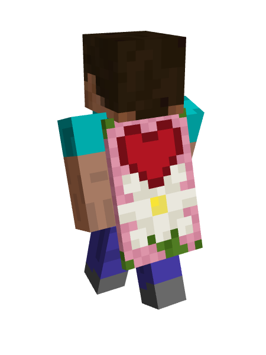

New Valentine Cape for Minecraft in 2022
Sheumais | 10 August 2022
A new, unannounced, cape has been given to a Minecraft player.
The Valentine cape was given to user LolFoxy2 on the 10th of August, 2022.
Although not proven, there is speculation that the cape is to be announced soon and available to the rest of players by the end of the year.
the valentine cape
When asked for an interview, LolFoxy2 stated that reason for having the cape was "classified."
This is not the first time Mojang have given out capes both to individual players and to the community. It remains to be seen whether this is an exclusive cape or attainable by all like the Migrator cape.